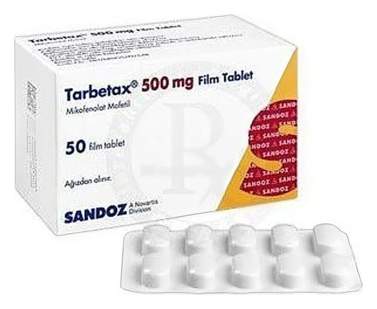

Tarbetax 500 mg Film Kaplı Tablet, 50 Adet

Ne için kullanılır
KT · Bölüm 1• TARBETAX 500 mg mikofenolat mofetil içeren film kaplı tabletler halindedir. • TARBETAX, vücutta bulunan ve inozin monofosfat dehidrogenaz (IMPDH) adı verilen bir enzimin çalışmasını engelleyerek etki eder, bağışıklık sistemini baskılar (immünosupresandır). • TARBETAX 50 ve 150 film kaplı tablet içeren ambalajlarda, 10’ar tablet içeren blisterler halinde bulunmaktadır. Magnezyum stearat, sığır kaynaklıdır. • TARBETAX tablet, size nakledilmiş böbrek, karaciğer veya kalbin vücudunuz tarafından reddini önlemek için kullanılır. TARBETAX bir kalsinörin inhibitörü (TARBETAX gibi, organ naklinden sonra vücudun reddini engelleyen bağışıklık sistemini baskılayıcı ilaçlar) veya kortikosteroidle (vücutta böbrek üstü bezlerinden salgılanan bir hormon olan kortizole benzer yapıda ilaçlar) aynı anda kullanılabilir.